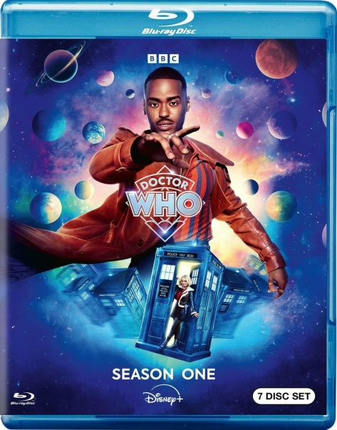
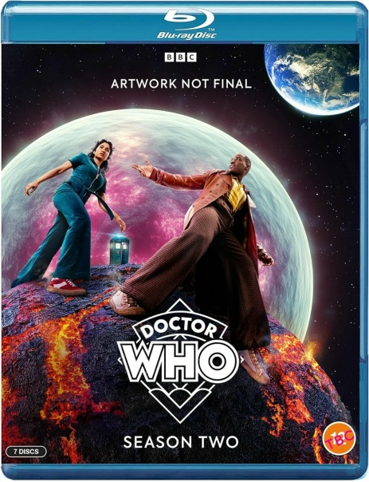

Таблица коллекции |  Навигация по канону |  Связные экранизации |
Таблица коллекции | Навигация по канону | Связные экранизации |


Эра Пятнадцатого Доктора
Актёр: Шути Гатва

Новая эра «Доктора Кто» с Шути Гатвой в роли Пятнадцатого Доктора: энергичного, открытого, эмоционально яркого — его Доктор смеётся и плачет, не пряча чувств за бронёй. Спутница Руби Сандей приносит с собой загадку собственного происхождения, которая незримо пронизывает весь сезон, а Расселл Т. Дэвис снова у руля экспериментирует с форматом: от музыкального триллера до эпизода, где Доктор почти не появляется. Тон сезона — праздничный, сказочный, но с тёмными подпитками, а финал возвращает масштаб классической угрозы.
Наш плейлист сезона в ВК

Второй сезон — финальный для Шути Гатвы: его Доктор обретает нового спутника, Белинду Чандру, которая не просто сопровождает его, а спорит, сомневается и не боится идти наперекор. Главная нить сезона — попытка вернуться на Землю, которую что-то неумолимо отталкивает, превращая каждый прыжок во времени в отсрочку. Тон мрачнее, ставки выше, пантеон богов выходит на первый план, а финал подводит черту под короткой, но яркой эпохой и оставляет вопросов больше, чем ответов.
Наш плейлист сезона в ВК 4MVO+DUB+SUBВ других озвучках смотрите по инструкции
Напряжённый спин‑офф без Доктора: древняя раса Морских дьяволов поднимается из глубин, и планета оказывается на грани межвидового конфликта. ЮНИТ держит оборону, а хрупкие попытки договориться тонут в нарастающей панике — в центре не громкие победы, а цена каждого компромисса и страх перед стихией, которая больше не хочет быть просто фоном. Тон — суровый и тревожный, будто сама вода стала врагом, а надежда держится на тех, кто не готов сдаваться.